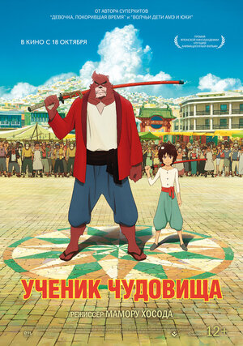

Ученик чудовища (2015)
У девятилетнего мальчика Рэна недавно погибла мама, и её родственники хотят забрать его к себе. Мальчик же хочет остаться с отцом, от которого же, однако, нет никаких известий. Рэн решает сбежать от родственников и начинает бродяжничать на улицах Токио. Там его замечают полицейские и хотят схватить для разбирательств. Убегая от них, Рэн скрывается в длинном узком переулке, который приводит его в параллельный мир, населённый чудовищами (бакэмоно). В этом мире готовится отойти от жизни похожий на кролика правитель Великий Мастер. Перед этим он должен выбрать себе преемника из двух кандидатов, мастеров боевых искусств, — популярного Свиногора и могучего Медвежута. У Свиногора есть двое детей и множество учеников, он храбр и дисциплинирован. Медвежут же ленив и не имеет ни детей, ни учеников, что делает его неподходящим для звания Великого Мастера. Желая доказать всем, что он способный учитель, Медвежут предлагает Рэну стать его учеником.
Назад